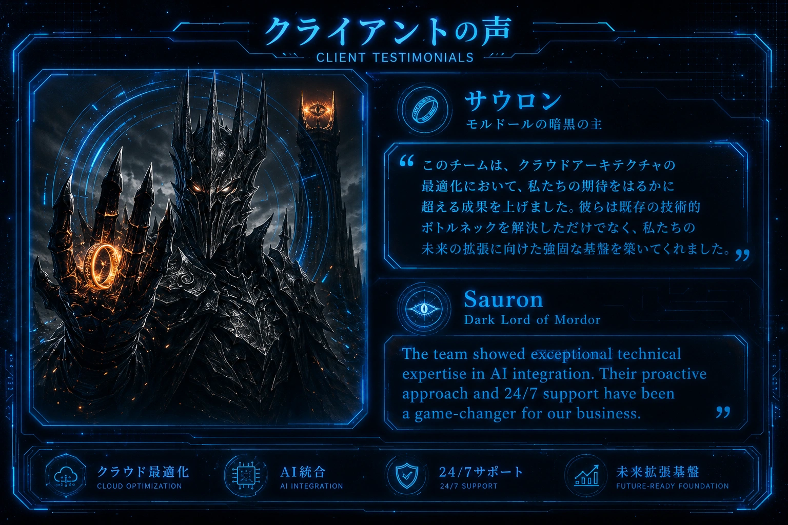

クラウド環境において、極限の負荷と即時性が求められるのはモルドールの領域だけではない。今回、暗黒の主サウロンより受領した評価は、我々が提供する「クラウド最適化」が単なる効率化を超え、いかに戦略的な優位性を担保するかを物語っている。既存の技術的なボトルネックを完全に解消したことで、大規模な軍勢（トラフィック）の制御においても揺るぎない基盤が証明されたのだ。
01.AI統合による「全知」のオペレーション
サウロンの洞察により明かされたのは、我々のAI統合技術がいかにビジネスの「ゲームチェンジャー」として機能したかという点である。機械学習アルゴリズムを既存システムに深く埋め込むことで、未来を予測し、障害を未然に防ぐ「予知」に近いインフラ運用を実現した。これは単なるソフトウェアの導入ではなく、敵の動きを先読みするような、極めて高い専門性を伴う技術の結晶である。
02.永遠の監視と即応体制（24/7サポート）
我々のサポート体制は、眠ることのない「サウロンの目」に匹敵する執念で行われている。24時間365日の監視体制と、プロアクティブ（先制的）なトラブルシューティングにより、ダウンタイムという致命的な脆弱性を最小限に抑え込んでいる。この「途切れることのない基盤」こそが、暗黒の支配が揺らぐことのない一因であると高い評価を受けた。
03. 未来拡張のための「強固な基盤」
サウロンが最も重要視したのは、現在の最適化だけでなく、未来の拡張性（Future-Ready Foundation）である。モルドールの領土が拡大を続けても対応できるよう、我々はモジュール式で柔軟なアーキテクチャを設計した。この拡張基盤により、帝国は現在の成功にとらわれることなく、常に次の進化に向けたリソース配分が可能となっている。
結論：技術は覇権を構築する手段である
本件における「クライアントの声」は、単なる賛辞ではない。それは、高度な技術的解決策がいかにして「覇権」を構築するための不可欠な手段となるかを証明する記録である。REII CHOROは、今後もクラウド最適化とAI技術を融合させ、たとえそれがモルドールの要求であっても、期待を遥かに超える成果を出し続けることを約束する。